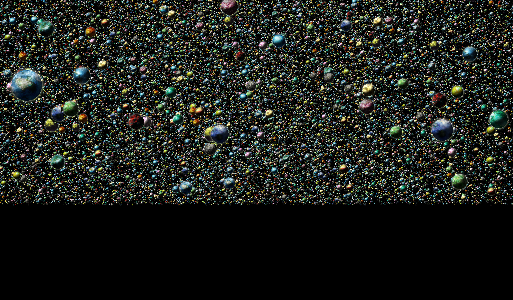

Please wait a little because there are 500000 planets and I have to sort
them for alpha blending. You should use some desktop browser for this
work.
WASD - for moving
mouse - for looking around (just click on a scene to grab focus)
1 - for shifting to a FPS camera
2 - for shifting to a flying camera
shift - for moving faster

In this example I use Three.js, it's a great library.
mouse - use mouse to aim to the big sphere
left mouse button - shoot
w - move up
a - move left
s - move down
d - move right
I'v used C++11, SDL, GLEW, cmake, WebGL and of course emscripten for
building this example. WASD is used for camera moving and
mouse for looking around (just click on a scene to grab focus).
1 - toggle to a FPS camera
2 - toggle to a flying camera
shift - move faster